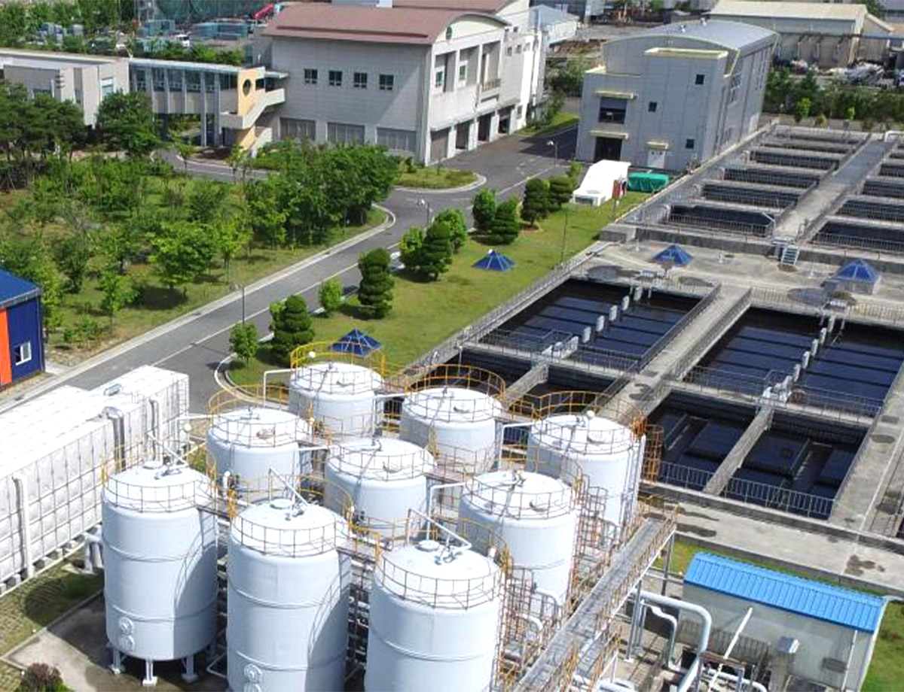

용수 사용량 절감을 위하여 지속적으로 임직원 참여 캠페인을 실시하고 있으며, 울산공장은 용암폐수종말처리장의 방류수를 재생한 용수를 사용하고 있습니다.

울산석유화학단지 용암 방류수 재이용 시설
에너지 사용량 감소를 위하여 LNG 연료 전환, 태양광 발전시설 투자, 전력수요관리 참여, 임직원 참여 캠페인 및
고효율 에너지 설비 교체를 시행하여, 에너지 사용량 절감 노력을 실천하고 있습니다.
애경케미칼은 제품 포장 시 재활용업체를 통해 재생된 드럼을 사용하여 신규 드럼 제작에 소요되는 자원을 절약하고 있습니다.